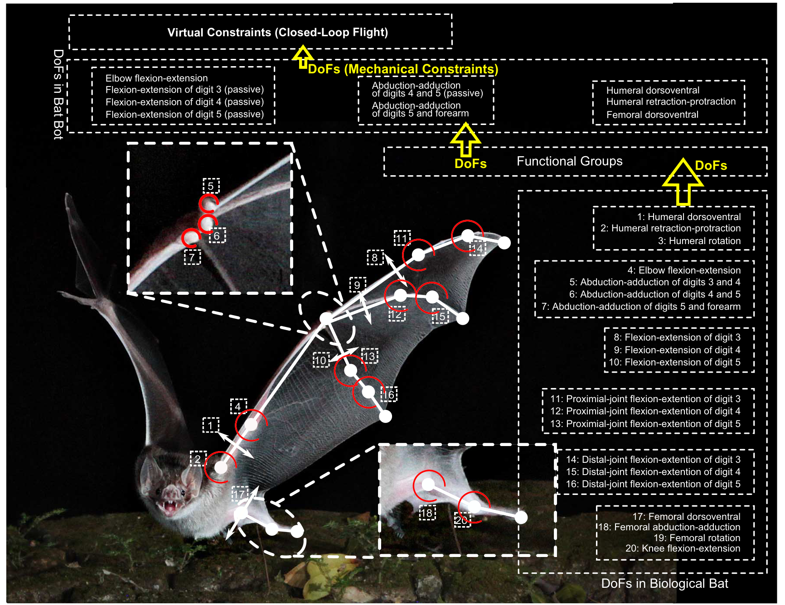
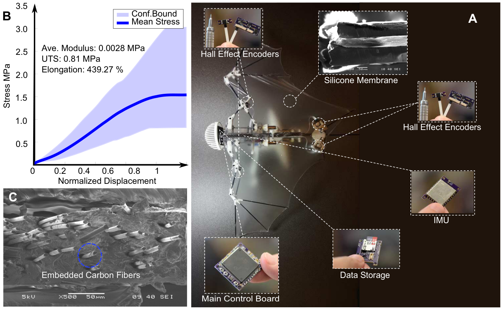
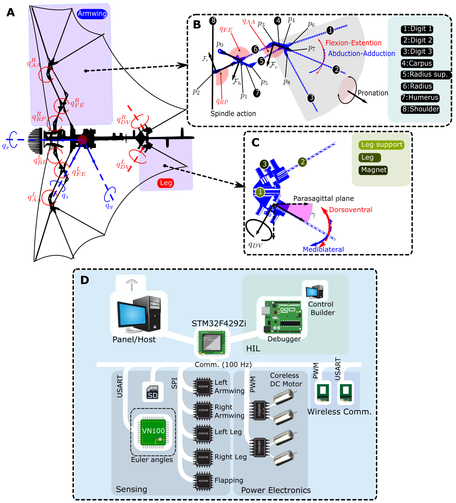
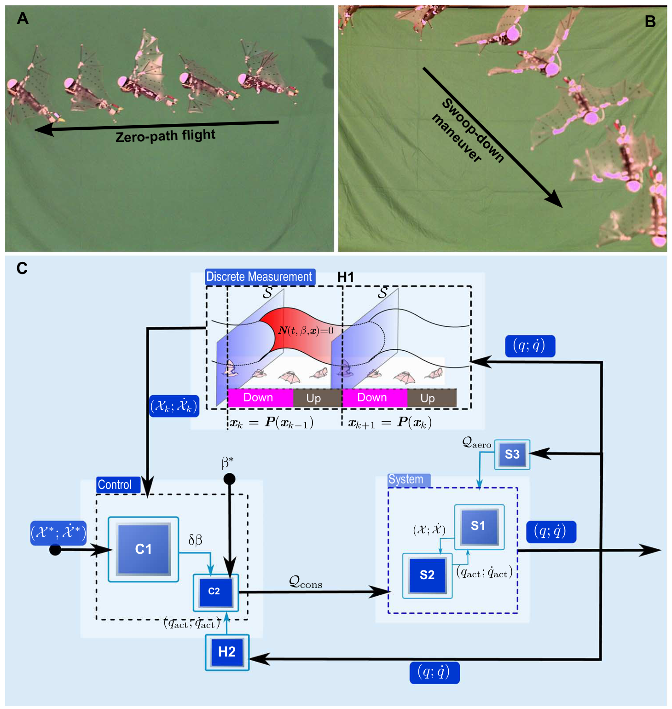
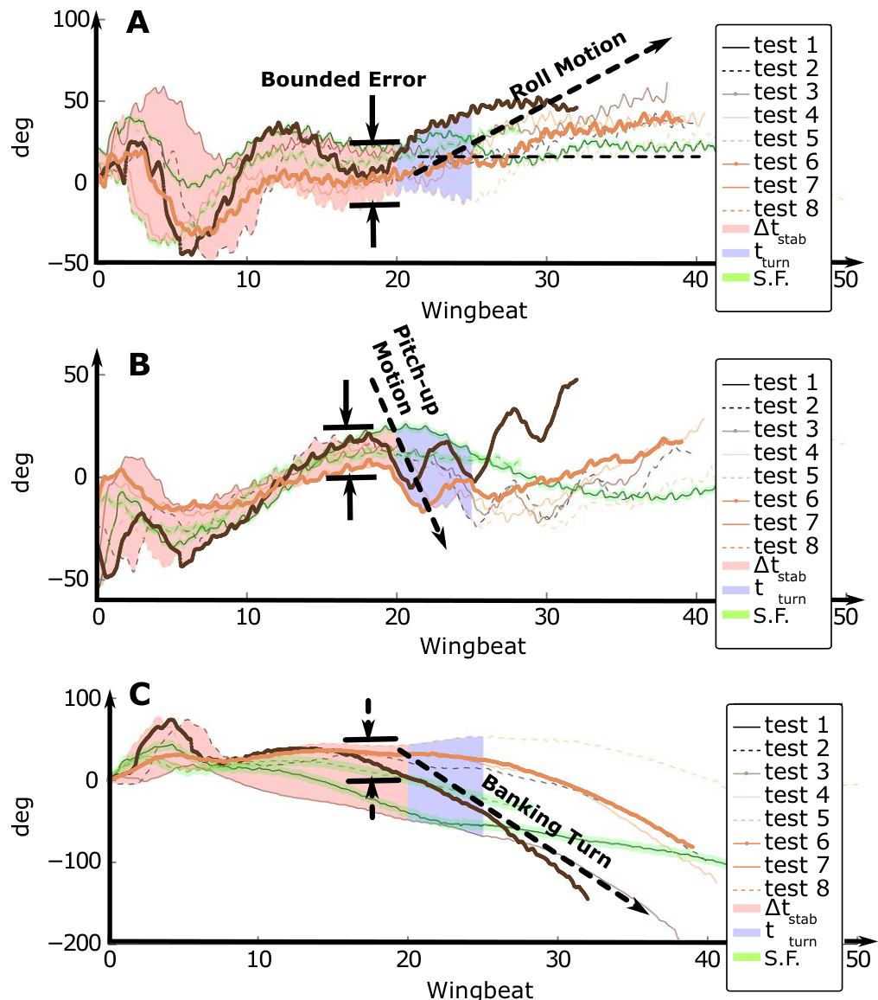
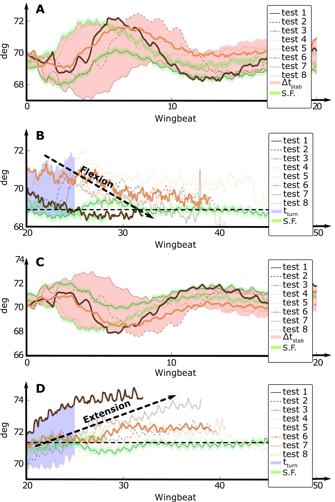
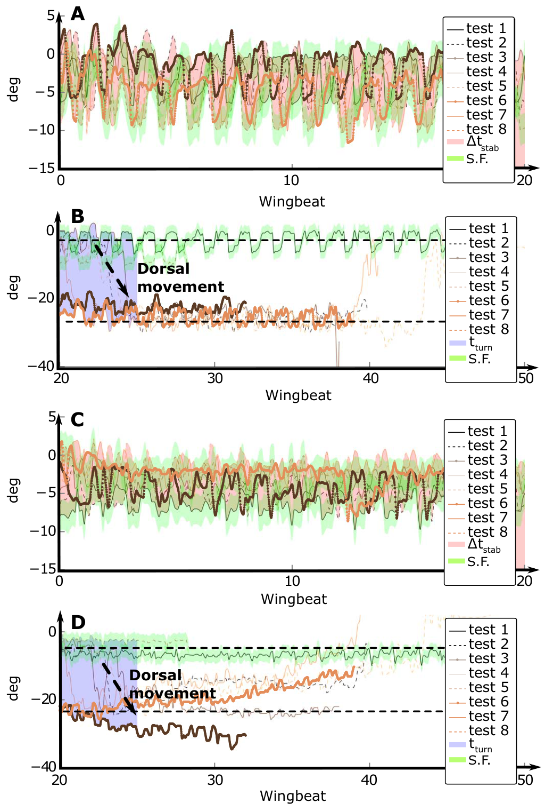
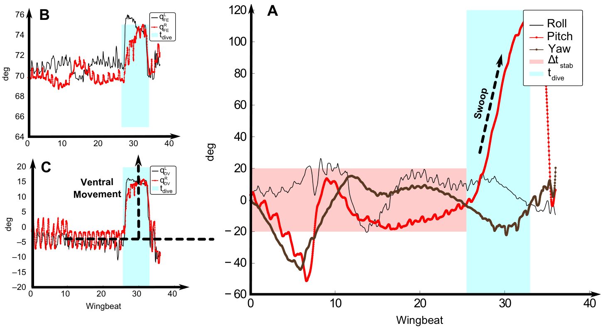

FIG. 1
从四十多个自由度，找到值得保留的动作
这张图是设计逻辑：先按功能理解生物运动，再用结构和控制减少独立调节的变量。

作者把机械耦合、超薄可伸展翼膜与周期运动控制结合起来，构建 93 克的 B2，实现无系留直飞、倾侧转弯与俯冲。最值得学的是：身体结构、可测状态和控制输入如何一起设计。
阅读依据：用户提供的出版社排版 PDF，共 13 页，其中论文正文与参考文献 12 页、附加信息页 1 页。已阅读正文、Methods、Fig. 1–8；补充材料 S1–S4、表 S1 和影片 S1–S5 未独立获取或核验。下文凡涉及补充实验的数值，均标为正文报告。原始 PDF 不随网页上传。
研究问题是：蝙蝠有四十多个主动与被动关节自由度，怎样在轻量飞行器上保留关键形变，又让它可控？作者保留五个独立驱动通道，用连杆联动更多关节，用柔性翼膜覆盖骨架，再通过机载反馈调节周期关节轨迹。贡献在于这套系统设计及真实飞行验证；不是发明 PCA、庞加莱映射，也不是学习型飞行策略。
复杂身体未必需要逐关节独立控制。B2 先通过机构选定可达的运动族，再让算法在低维轨迹参数中纠偏。硬件限制了动作空间，反馈则让这个空间在飞行中仍可调整。这里可以借鉴“结构决定控制问题”的思想，但不能将它直接称为强化学习、具身大模型或 VLA。
IMU 与五个磁编码器 → 机身姿态/变化率及关节角 → 每拍修正轨迹参数 → 100 Hz 关节跟踪与电机驱动 → 臂翼、后肢及膜翼变形 → 气动力与惯性改变机身运动 → 再由机载传感读取。
没有翼面应变进入控制的证据。膜翼在这里是气动与结构部件，机载传感主要是姿态和关节本体感觉。
rᵢ(t, β) = aᵢ cos(ωt + φᵢ) + bᵢ
N = qact − rdes(t, β) → 0
δβₖ = KS [δqₖ ; δq̇ₖ]
第一行把动作写成少数可调参数：频率 ω、幅值 a、相位 φ 和偏置 b。第二行要求实际关节追上目标轨迹，这就是软件施加的“虚拟约束”。第三行在每个翼拍起点读取姿态偏差，修改下一拍的动作参数。转弯与俯冲通过改变偏置等参数实现。
离线先在动力学模型中寻找周期解，再研究扰动经过一拍后是缩小还是放大。庞加莱映射把连续周期运动转换为逐拍状态关系；选择反馈增益，使局部线性化闭环映射的特征值模小于 1。这是周期轨道附近的稳定设计，不能扩展为任意动作的全局稳定保证。来源：正文 pp. 5–6、10，Eq. 3–7、12–16。
这张图是设计逻辑：先按功能理解生物运动，再用结构和控制减少独立调节的变量。

电子系统形成姿态与关节反馈，超薄可伸展皮膜让骨架变形时仍能维持翼面。

一个同步扑动驱动、左右臂翼各一个驱动、左右后肢各一个驱动，构成五个独立驱动自由度。

先设计一组可行的周期关节轨迹，再以约 10 Hz 调整轨迹参数，以 100 Hz 跟踪关节运动。

姿态曲线把“看起来飞起来了”进一步变成可核对的稳定与机动证据。

这组编码器曲线连接 Fig. 5 的机体响应与真实关节动作；同时需要保留原文的左右标注歧义。

腿牵动连续膜翼的后缘，因此改变腿角也会改变机体受到的气动力矩。

臂翼伸展与后肢腹侧动作共同参与快速向下机动；正文报告约 14 m/s 的峰值速度。

| 结果 | 证据与条件 | 不能推导什么 |
|---|---|---|
| 8 次姿态与关节曲线 | Fig. 5–7；无系留室内飞行，机载采样 100 Hz，含 1 次不转弯参照。 | 没有总试飞分母，不能计算整套系统成功率。 |
| 20 翼拍以内滚转稳定 | 正文 p. 7；手抛扰动后进入零附近有界区域。10 Hz 时约 2 s。 | 不是厘米级位置保持，也不是所有轴零误差。 |
| 平均飞速 5.6 m/s | 正文 p. 8 报告另一组 4 次飞行，用动捕坐标求导；相关图在 SI。 | 不能声称所有实验均没有动捕，也不能据此认定控制依赖动捕。 |
| 俯冲峰值约 14 m/s | 正文 p. 8 报告，Fig. 8 展示对应类型的机动角度。 | 不是持续巡航速度，缺少此峰值的重复性与误差报告。 |
| St = 0.43；翼载 13 N/m² | 正文与果蝠数据比较；果蝠 St = 0.4–0.6，翼载 11 N/m²。 | 无量纲或尺度指标相近，不等于完整生物机动性能相同。 |
| 名义升力系数 0.8 | 正文报告机器人固定于风洞微型力传感器，来流 4–6 m/s；计算基准含腕部速度。 | 不是自由飞行中直接测得的持续升力系数，也不能无条件与其他翼型数值比较。 |
这篇论文的突破，是把复杂的蝙蝠变形翼做成一个轻量且能闭环飞行的平台。作者借鉴生物运动协同，用机械耦合把独立驱动压到五个，再用超薄翼膜和两层周期控制完成直飞、转弯、俯冲。机载 IMU 和编码器让系统知道姿态与关节状态，但没有测翼膜实际受力。因而对我们的启发是：在已有姿态与关节闭环之上，翼面传感究竟能补足哪些状态，并带来什么实飞收益？
推荐讲图顺序：Fig. 1 设计降维 → Fig. 3 机构与传感 → Fig. 4 控制 → Fig. 5/6 实飞证据 → Fig. 8 机动与边界；材料听众可在 Fig. 3 前加入 Fig. 2。